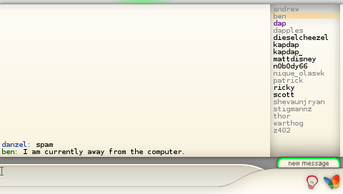

It is finally released, days or hours late, as per usual.
Changelog stuff:
New Graphics, complete new style :)
New keyboard (danzeff, see danzeff.txt for usage information)
You can rename contacts.
Less crashes! (maybe! lol)
Works on the new eloader!
Contact list scrolls automatically.
New msg popup.
When logging into wifi/bitlbee there is more feedback
READ THE README BEFORE INSTALLING! 🙂 (It’ll answer most of your questions)
Also, read the FAQ / TODO list here
Downloads:
psp 1.00 and 2.00+ version
psp 1.5 version

Enjoy 🙂
And while we’re at it, here is a fixed webnab for 2.00+, you can quit by pressing the select button (L+R+Start makes it crash)
get it here
I’ve got a paypal account up if you want to show your appreciation in the form of dollar signs 🙂
Um, not sure.
Try scroll down the contact list? if you tab over to it you can scroll it when you get to the edges.
Maybe all your contacts aren’t stored on the yahoo server list? try delete and re-add them on a pc?
Other than that, no idea.
Ok, I’ll try it out again. I’m pretty sure I scrolled down only to get the server window again but I’ll recheck. BTW, contact lists are not stored locally for quite some time now. thanx!!
Thanks for this program, I look forward to finally using it 🙂
As many other have experieced, my afkim is stuck on resolving, which is a bit stressing. I can’t understand why…
I have 3.02 OE-B
– WiFi works with other homebrew
– WiFi connection is strong
Please help locating the problem, it would be very much appreciated!
Hello danzel…….I trying make some traslations to portuguese of afkim……but i need your colaboration to make this……i will share with all brazilians , credits ist all for u and after i make the traslation i give to u a tralated version
Thanks say all psp users of brazil
man you make a great work
Reply to Håkon sent via email, in short:
What other wifi homebrew works with 3.02 OE-B?
Reply to leandrocp is in the CHIP8 post and also emailed.
Hakons problem solved, user fault.
I have te same problem as Håkon. AFKIM get stuck when resolving. However, my Wifi works great with other hombrew software. Thanks.
Håkons result was:
how do i put afkim on my psp fw3.03
@monkey – read the firmware 3.03 section on:
http://forums.qj.net/f-guides-general-psp-42/t-ultimate-newbie-guide-to-the-psp-16876.html
I think this input method rocks. But i was just wondering? How about making each of the 9 squares have the same letters as on a mobile? And then include that predictive T9 input method?
The input would be simple. Just select a square with the analog stick, and ‘select’ the square with the X button. And the predicted words available would be selected with the up/down d-pad and Circle. Cursor movement would be d-pad left/right. Space=Triangle and Backspace=Square (like the original PSP input method). L-trigger is switch to numbers/symbols. R-trigger is capital letters. Start would be Enter. Select cancel.
I am a complete nitwit in programming though. So I might not know how difficult this can be. It may be too much of a hassle.
I thought about doing a predictive method before I worked on danzeff but decided not to.
Danzeff works for me and I think most people find it is acceptable in relation to speed and ease of typing.
Maybe in the future I’ll play with an alternate method, but for now I’m fine.
Pingback: Using AIM on PSP - PSP3D.com - Sony PlayStation Portable News, Homebrew, Hacks, Reviews, Videos, Mods, Forums
I choose my connection then it tells me:
connection state 2 of 4
Connecting to wifi Failed, Retrying…
connection state 2 of 4
Connecting to wifi Failed, Retrying…
over and over again! My connection works fine, I use it daily, dont understand what the problem is, can anyone shed some light on this??
What firmware are you using, any custom firmware?
What wifi security?
DHCP/Static IP?
Danzel, below are the specs:
Firmware: 3.10 OE-A
Security: WPA-PSK (AES)
IP: DHCP
AFKIM doesn’t support WPA, there are some changes needed in the network connection code to support it.
There should be a new PSPRadio release coming up soon with WPA support. I’ll recompile the AFKIM plugin for it if ahman doesn’t include it.
heyz i thouht that it might be the secuirty key for giving me this error “connection state 2 of 4
Connecting to wifi Failed, Retrying” but i tried it on a router without key and still same error but i can connect to them both fine witt the psp browser i am using custom firmware 3.03 OE-C
AFKIM does not work on the 3.* OE Firmwares it would seem.
Ye hopefully yhe new version works fine ebbudy sucks
When will the new version be out
New version? Who said anything about a new version? 😉
Check back in a few days, will be news then 😀
Yeah, I’m having that same problem. I loved the program when my PSP was at like 2.0 or something. It wasn’t like the other IM clients (black screen, white text… looks like you’re programming in DOS) it looks like a real IM. I especially love it because of GTalk. No others do it like you do it.
Keep up the excellent work!
heyz i just tried afkim 3 and it worked on 3.03 oe-c with wpa-psk (tkip) security key just confirming this for people like me because i wan unable to use afkim2 with what i have thanks danzel sik app keep up da good work
i downloaded it where do i save it on my psp
shawn: go here: http://OFFLINEZIP.wpsho/?p=28
Grab AFKIM 3 and check out the getting started guide, it will help get you started 🙂
hi my psp version is 3.10 OE-A´ and I have the same problem as much people, when I put all and loggin it shows resolving and it stops.thanks
Have you checked out the AFKIM _3_ blog post? 😉
http://OFFLINEZIP.wpsho/?p=28
hey i have psp firmware 3.5 and nothing i do will make this program work on it. How do I get afkim v3 to work on my 3.5
hey, i’ve got a problem, i’m using the 2.6 gta eboot, but when i try to load this it does one of two things, either it goes to a blank black screen and doesn’t load anymore, and i need to reset the eboot, or as soon as i load the program, it just goes back to the eboot main menu
if anyone knows what to do tell me at myspacemusic2@myway.com
@Mario – It won’t work.
@EvilGamerX – It doesn’t work on eboot loader, downgrade to 1.5 (then upgrade to OE firmware if you want)
how do put the tihngy on your psp? jst klik n drag?
and wat is the homebrew stuff?
Hey I am sorry if this has been answered already but I am run CFW 3.90 m33-3 by dark alex, I have AFKIM in my game150 folder and it boots fine but once I am at the screen that asks for some beeline account and I enter the account info that I want registered it reads as follows:
Resolving
Resolved, Connecting
Connected, Identifying
Then it sits there, no keys do anything except the home key brings up the home menu please someone reply with help thank you!
You need to get the new version from ZX81
http://zx81.zx81.free.fr/
Pingback: Installing afkim | Sejani
You may even want to think about installing a appear blocker or using the show up blocker add-on on your particular browser to aid prevent some problems before the begin. This enables flawless exchange of
info between recruitment and back office systems. Google will be sending you the most qualified
traffic so concentrate many your SEO efforts
on Google.